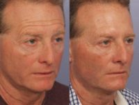

Marina Plastic Surgery by Athenix in Marina del Rey, California 90292
Name: Marina Plastic Surgery by Athenix
Display name: Marina Plastic Surgery by Athenix
Mission: Marina Plastic Surgery is a name known around the world as a leader in the field of plastic surgery and aesthetic care. Founded by renowned Los Angeles plastic surgeon Dr. Grant Stevens, Marina Plastic Surgery owes our reputation to a highly personalized and meticulous approach. By putting patients first, Dr. Stevens revolutionized plastic surgery for generations to come and created loyal Patients for Life from all 50 states and virtually every corner of the globe.
Website: https://www.marinaplasticsurgery.com/
Office hours: Mon: 9:00am – 6:00pm
Tue: 9:00am – 6:00pm
Wed: 9:00am – 6:00pm
Thu: 9:00am – 6:00pm
Fri: 9:00am – 6:00pm
Phone: (877) 298-9915
Address: 4560 Admiralty Way, Suite 256, Marina del Rey, California, USA, 90292
City: Marina del Rey
State: California
Country code: US
Postal code: 90292
Phone: +18772989915
Country: USA
GPS coordinates on map: 33.982821,-118.4417646
Treatments:
- Microdermabrasion
- Botox
- Juvederm
- Restylane
- Radiesse
- Sculptra
- Laser Hair Removal
- Laser Resurfacing
- Fraxel Laser
- Sclerotherapy
- TCA Peel
- Smoothbeam Laser
- Smart Lipo
- Liposonix
- LED Light Therapy
- IPL
- Hair Transplant
- Facial
- Nonsurgical Facelift
- Dysport
- Nonsurgical Nose Job
- Fraxel Repair
- SlimLipo
- Latisse
- Lip Fillers
- Mole Removal
- Skin Rejuvenation
- Scar Removal
- Hair Loss Treatment
- Dermal Fillers
- Laser Liposuction
- Fractional Laser
- CO2 Laser
- VI Peel
- Belotero
- CoolSculpting
- Ultherapy
- Cellulaze
- MiraDry
- Liquid Facelift
- Venus Freeze
- Vanquish
- Voluma
- ThermiTight
- NeoGraft
- Volbella
- Cellfina
- Restylane Silk
- Nonsurgical Neck Lift
- Halo Laser
- Kybella
- ThermiVa
- ThermiSmooth Face
- Restylane Lyft
- Clear and Brilliant
- Vollure
- Hand Rejuvenation
- HydraFacial
- Restylane Refyne
- Restylane Defyne
- Obalon Intragastric Balloon
- BroadBand Light (BBL)
- Viveve
- Glacial Rx
RealSelf Info
Profile created: Aug 7, 2016
Profile modified: Apr 14, 2023
Business type: Practice
Review count: 20
Rating: 4.2
Rating time spent: 5
Rating answered questions: 5
Rating bedside manner: 5
Rating after care: 4
Rating payment process: 5
Rating wait times: 5
Rating courtesy: 5
Rating responsiveness: 5
RealSelf’s PRO: No
Special Offers
Heading
Start Time / End Time
Detail
Treatments
1 FREE Coolsculpting cycle w/ miraDry purchase
Aug 29, 2019 /
Nov 30, 2019
Please mention RealSelf to redeem this special.
Specific treatments
Up to $350 off Fillers & Injectables!
Dec 5, 2018 /
Dec 31, 2018
Holiday Offer: Up to $350 off injectable and filler products! Limited time special offer.
Includes all Galderma and Allergan products
Buy 1 syringe of filler get $50 off
Buy 2 syringes of filler get $150 off
Buy 3 syringes of filler get $300 off
PLUS $50 off Botox or Dysport when added to your filler treatment the same day
Minimum 30 units of Botox or 90 units of Dysport must be administered. Must get treated by 12/31/18.
Any treatment
Buy Micropen w/PRP, Get TriHex Duo Kit!
May 3, 2018 /
May 31, 2018
Valued at $1,095, Purchase Micropen w/ PRP ($150 off) + receive TriHex duo kit for only $700!
Any treatment
Doctors
Name: Grant Stevens, MD
Statement: Dr. Grant Stevens is the founder and medical director of Marina Plastic Surgery and Marina MedSpa, one of the best medspas in Los Angeles and Beverly Hills.
Over more than 34 years of practice, Dr. Stevens has devoted himself to developing new approaches to plastic surgery, pioneering medical-grade skin care solutions, and providing the most advanced nonsurgical procedures. His philosophy of “Patients For Life” underpins his practice. “Patients come to us to look their best, and we’re committed to that goal for the long term,” says Dr. Stevens.
Voted by his peers into The Guide to Top Doctors and Castle Connolly’s Top Doctor Guide, Dr. Stevens is recognized as one of the very best plastic surgeons in America. A member and past president of the American Society for Aesthetic Plastic Surgery (ASAPS), Dr. Stevens is also a member of the American Society of Plastic Surgeons and the International Society of Aesthetic Plastic Surgery.
He has lectured around the world on virtually all aesthetic procedures and published more than 90 articles and chapters on subjects ranging from abdominoplasty (tummy tuck), mastopexy (breast lift) to breast augmentation, liposuction, laser skin resurfacing, and how to safely combine aesthetic procedures.
Dr. Stevens received his medical degree from Washington University School of Medicine in St. Louis. After completing his general surgery training at Harbor-UCLA Medical Center, he returned to St. Louis to complete a residency in plastic surgery, as well as fellowships in plastic surgery and hand surgery.
Board-certified by the American Board of Plastic Surgery, Dr. Stevens operates in an AAAASF-accredited plastic surgery facility in Marina Del Rey, California.
Began aesthetic medicine in: 1986
Rating: 4.7
Name: Justin Perez, MD
Statement: Dr. Justin Perez is a board-certified plastic surgeon and the Medical Director of Marina Plastic Surgery by Athenix, in Marina Del Rey, California. He is one of the aesthetic fellowship directors for the USCMarina Aesthetic Surgery Fellowship, considered a top plastic surgery fellowship in the United States. Dr. Perez trained under Dr. Grant Stevens, who has been recognized in the industry and by his peers as one of the best plastic surgeons in America.
Began aesthetic medicine in: 2013
Rating: 5.0
Staff
Name: Tami -
Position: Registered Nurse
Years experience: 15
Biography: Tami, R.N., joined Marina Plastic Surgery in 2002. She primarily works with Dr. Luis Macias assisting with patient care.She LOVES working with patients and their families pre – and – postoperatively.She is a mother of twin boys who keep her busy when she is not in the office. Tami received her nursing degree from Santa Monica College, and also attended UCLA on a full athletic scholarship for swimming.
Name: Maria -
Position: Registered Nurse
Years experience: 28
Biography: Maria has been with Marina Plastic Surgery Medical Corporation since 1989. Most of her time is spent with post – operative patients and patient education.She is also the Clinical Nurse coordinator for the FDA regulated clinical breast implant studies in our office.Maria has a Master’s Degree in Nursing from USC. She enjoys working with patients and directing them through a positive surgical experience as well as the many other services we provide.
Name: Bessy -
Position: Medical Assistant
Years experience: 12
Biography: Bessy works in our practice to assist our Physician Extenders, in the non-surgical division of our practice, ‘The Institute’. Her primary focus is to be the liaison between the PEs and patients, to ensure optimal communication and understanding. She joined our team with extensive knowledge is the medical industry. Her past includes cosmetic, dermatologic, and family practice experience as a Certified Surgical / Medical Assistant. Bessy takes pride in her calming disposition, and is always available to help out wherever she is needed! Her mission is to ensure maximum comfort and trust while in our care!
Name: Cory Felber
Position: Physician Assistant
Years experience: 17
Biography: Cory is an NCCPA nationally board-certified and state-licensed Surgical Physician Assistant trained in a wide variety of procedures. She has her undergraduate degree from UCLA in the field of Molecular, Cellular and Developmental Biology. Following UCLA, she attended the Physician Assistant Program at USC School of Medicine, and completed her clinical training at LAC-USC Medical Center. She received her NCCPA national board certification with honors in both general and surgical medicine.
Cory’s proficient and skilled techniques complement the work of our Plastic Surgeons, and assist those wanting a non-surgical approach to self-improvement. She is also a prestigious member of the Injector-Trainers for Allergan, (the makers of BOTOX, JUVÉDERM, & VOLUMA), as well as for Galderma (the makers of DYSPORT, RESTYLANE, RESTYLANE SILK & RESTYLANE LYFT).

Jennifer Tinelli
Name: Jennifer Tinelli
Position: Nurse Practitioner
Years experience: 15
Biography: Jennifer is a nationally board-certified Family Nurse Practitioner. She received her bachelor’s degree in nursing from Florida State University in 1998 and her master’s and Family Nurse Practitioner degrees from California State University. She has been specializing in aesthetics for over a decade, and is nationally recognized for her achievements in cosmetic procedures. Motivated by the strong conviction that no one should have to feel compromised by their appearance, her expertise and training is complemented by her compassionate and caring demeanor.
Her extensive experience in aesthetics has allowed her to work with a broad range of energy based technologies, including laser, light based, radio frequency, and ultrasound. She is an experienced injector in all types of neuromodulators and fillers. She is well versed in treating all skin types and ethnecities, as well as a wide-range of conditions and concerns.
Name: Rachael Ostrea
Position: Master Aesthetician
Years experience: 9
Biography: Celebrity Beauty Expert, Rachael Martinez, works in our practice as a licensed Medical Aesthetician, Certified Permanent MakeUp Artist , and Body Contouring Expert. Our practice is the world’s leading authority on CoolSculpting, and Rachael is credited for much of this success. She is dedicated to improving her patients’ overall appearance from head to toe, and thrives on making people feel more confident as a result. Rachael’s extensive knowledge of skin care products and procedures will ensure THE BEST treatment and result available in our industry. With nearly a decade of experience, you can rely on Rachael Martinez to deliver personalized and consistent visible results.
Name: Paulette -
Position: Master Aesthetician
Years experience: 9
Biography: Beauty Expert, Paulette McNeely, is a licensed and certified Medical Aesthetician & Body Contouring Expert. Paulette will work closely with you to obtain your skin care dreams and body-shape goals. Our Medi-Spa, The Institute, is the world‘s leading authority on CoolSculpting and non-surgical body sculpting technologies, and allows Paulette to thrive in her area of expertise. Paulette’s vast knowledge of cosmeceuticals and cosmetic procedures ensures that you’ll get the best treatment available in the country. Her sweet and sincere disposition, coupled with serious results and compassion, are a winning combination! Both male and female clients leave satisfied, nurtured and with a renewed sense of confidence.
Practice's answers
Question
Answer Header & Date
Answer Snippet
I'm interested in freshening up my face a bit and looking a bit less tired. What would you recommend?
Filler and Vivace
May 9, 2018
HI and thank you for your question!
You look great and starting early is super smart, you can get the anti-aging process started early and have less work later! There are several things that would help to freshen, naturally and subtly. A little cheek filler and some around the nasolabial folds would be great. To create a nice glow and some collagen stimulation, some medical grade skin care products and a few treatments with Vivace needling with PRP, would be great to provide immediate...
Post op 10 units botox for Brow Lift was injected on forehead. My forehead is almost paralyzed, my bro
Botox Brow Lift
May 9, 2018
HI and thank you for your question!
It is recommended to wait the full two week post injection to see the full result of this current injection. Then ideally check back in with your injector so they can compare the before and after pics to see if there is any way to touch it up and add more in some areas to give you more of that result. Injections into the glabella areas and around the crows feet can often help lift the brows some and open the eyes.
Best of luck!
Jennifer...
38 yr female, 60 units of botox in forehead, between eyes and crows feet. It seem like it did not work
Botox Results
May 9, 2018
HI and thanks for your question!
As stated below, you definitely want to wait the full two weeks to evaluate full result. If that time has passed, hopefully the injector took before pictures so you guys can compare the before and after in movement to see what effect it had. Its always good to touch base with the injector, so they know what kind of reaction your are having and what to plan for the next session etc.
Best,
Jennifer Tinelli, NP-C
I really want to CoolSculpt my chin but the chin piece doesn’t fit my shape. Can I try CoolSmooth?
Options to Treat Excess Fat/Volume Under Chin
May 9, 2018
HI and thanks for your question!
We would need to use the cool mini sizing tool to determine if we can fit it on you. Sometimes, if it doesn't fit one in the center, we find if we do two overlapping and at more of an angle, we can get this to fit better, in some patients. Kybella is a great alternative, but you do swell more. You can always do just one or two vials, to the main areas of concern, and see if this allows for less swelling. You can also consider Ultherapy to this area to...
1 Max vs. 2 regular overlapping for tummy bulge?
Coolsculpting Applicators
May 9, 2018
This totally depends on the patient, the amount of fat, fat distribution and the peaks of the fat pads. The provider should be doing a detailed assessment on you the day of the treatment, marking you with the sizing tools, and deciding which one is best for treatment one. Sometimes this treatment plan may change on treatment two. We usually recommend 6-8 weeks between treatments for this reason so we can see some changes from the prior treatment and gauge more effectively to next best...
Latest Before And After Photos
-

-
59 Year Old Man Treated With Botox Facial Injections Patient With Doctor Marina Plastic Surgery By Athenix
-
-
Dr Marina Plastic Surgery By Athenix 60 Year Old Man Treated With Botox Injection Treatment
-
-
Dr Marina Plastic Surgery By Athenix 63 Year Old Lady Treated With Restylane Defyne Candidate
Last updated on 12/08/2023